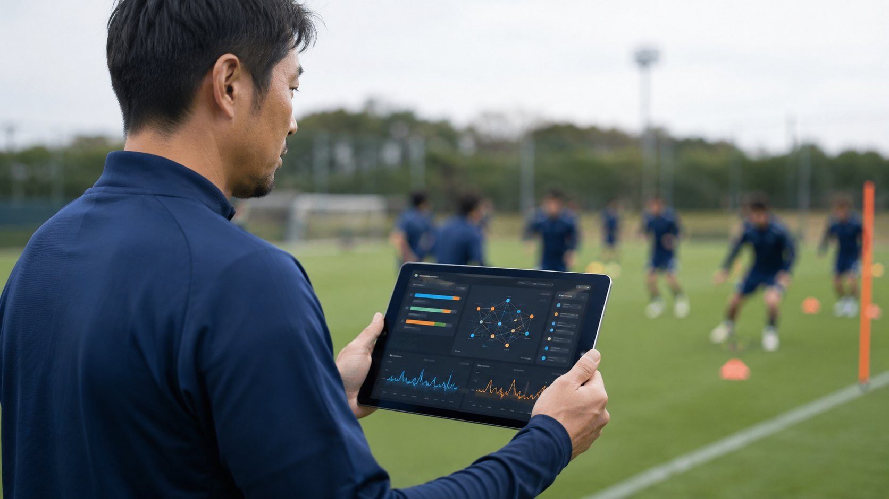
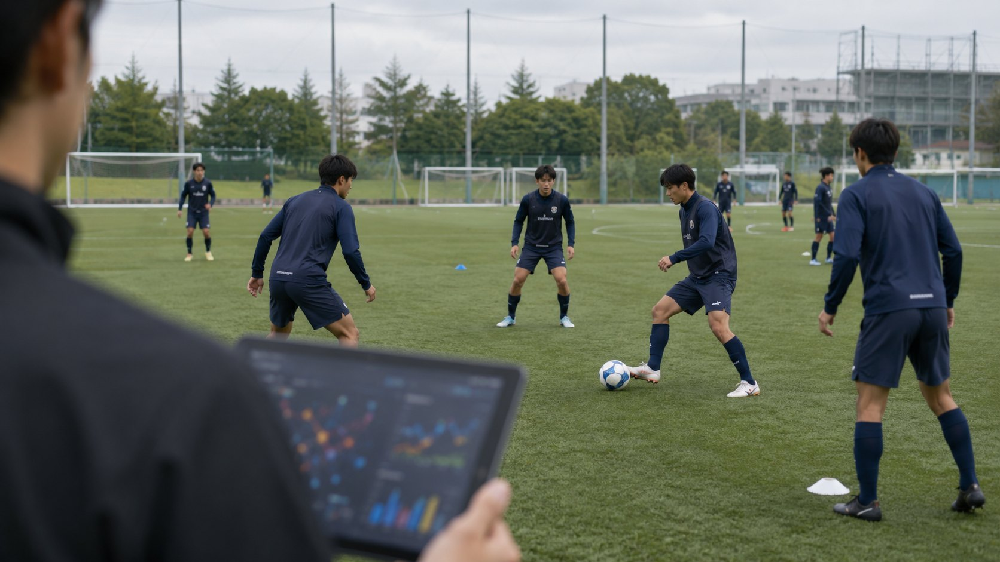

傷害リスク予測モデルの構築
約70%Precision
（的中率）
従来指標 ACWR：約5%
高リスクと判定した選手の約70%で、実際に傷害が発生しました。リスクの要因候補と、練習負荷の調整案までアプリ上に表示します。
※筑波大学蹴球部の2022〜2025年のデータを用いた検証結果です。対象は筋肉系・非接触靱帯系・オーバーユース系の傷害に限ります。

About
Odonataは、筑波大学の博士課程で研究を続けるメンバーと、サッカーの現場に立ってきたメンバーが集まって立ち上げたチームです。
スポーツの現場では、コンディション・GPS・試合・メディカル・育成計画といった記録が日々生まれています。けれどそれらは別々の場所に置かれ、つながらないまま積み上がっていくことがほとんどです。
私たちは、その散らばった記録をつなぎ直し、ひとつの指標を見ているだけでは分からなかった発見を見出す分析を行っています。そして、その分析結果を現場スタッフが日々の判断に使えるWebアプリとしても提供しています。
研究・分析・実装のすべてを、同じチームの中で行っています。
Service
分析から始めることも、プラットフォームから始めることもできます。
すでにチームが持っているデータから始めます。Excel・GPS・試合・コンディションの記録など、あらゆる情報をお預かりして分析し、現場で使える示唆として返します。
日々の入力から蓄積・一元管理・推移の確認・分析までを、ひとつの環境で行います。現場スタッフが毎日使うWebアプリです。
※写真はイメージです。
以下は、現時点で形になっているアウトプットの一部です。データの組み合わせ次第で、分析できるテーマは増えていきます。
約70%Precision
（的中率）
従来指標 ACWR：約5%
高リスクと判定した選手の約70%で、実際に傷害が発生しました。リスクの要因候補と、練習負荷の調整案までアプリ上に表示します。
※筑波大学蹴球部の2022〜2025年のデータを用いた検証結果です。対象は筋肉系・非接触靱帯系・オーバーユース系の傷害に限ります。
コンディション・GPS・試合・メディカルを横断し、どの指標がその選手の状態の中心にあるかを可視化します。つながり方は選手ごとに違います。
上記以外にも、データの組み合わせに応じた分析を行っています。
…など。分析テーマは、クラブごとに設計します。
複雑系アプローチComplex Systems Approach
指標をひとつずつ見るのではなく、指標どうしの関係性そのものを分析の単位に置いています。
単独では異常のない要因も、重なり方次第で危険域に達する。
選手の傷害やパフォーマンスは、GPSだけ、疲労だけ、試合スタッツだけでは決まらないからです。
つなぐデータに、決まった型はありません。チームがすでに持っている記録は、どれも分析の入口になります。
新しい機器の導入は不要です。紙やExcelで記録しているものからでも開始できます。
分析して終わりにせず、現場で使われ、データが貯まり、また新しい発見が生まれる。その循環をつくるためです。
使うほど、精度が上がる。
使うほど、発見が増える。
2026年6月から、大学トップレベルの競技環境で日常的に使われています。同時に、モデルの精度検証も続けています。

2022〜2025年の主観コンディション・GPS・スケジュール・傷害履歴を統合し、200以上の観点から特徴量を生成。過去に傷害が起きたときの状態との類似性を学習させ、選手ごとの傷害リスクを日次で算出するモデルを開発しました。
傷害の予兆を捉える指標として、これまで広く使われてきたのが ACWR（急性:慢性 作業負荷比）です。ACWR は、直近の負荷がこれまでの平均に対してどれだけ急に増えたか、という単一の比率で危険を判定します。
| 指標 | 何を表すか | ACWR（従来） | Odonata |
|---|---|---|---|
| Precision（的中率） | 高リスクと判定した選手のうち、実際に傷害が起きた割合 | 約5% | 約70% |
| Recall（捕捉率） | 実際に起きた傷害のうち、事前に予兆を捉えられた割合 | 約20% | 約20% |
見逃しの少なさ（Recall）は従来と同じ水準を保ったまま、的中率（Precision）を約5%から約70%へ引き上げました。
これは、注意すべき選手として挙がった10人のうち、これまで実際に傷害が起きたのは1人以下だったのが、7人になったということです。
検証対象100人の内訳
Precision ＝ 7 ÷ (7 + 3) ＝ 約70%
Recall ＝ 7 ÷ (7 + 28) ＝ 約20%
筑波大学の博士課程で、認知心理学・神経科学・臨床心理学を専門に研究しています。スポーツ・学習・認知をテーマに、心理学的手法とMRIなどの神経科学的手法を用いています。
筑波大学蹴球部で、選手として、また指導者として現場に立ってきました。データを使う側の感覚と、現場で実際に何が起きているかを知っています。
情報工学を専門とするメンバーが、プロダクトの開発を担当しています。現場から出た要望を、すぐに反映できる体制をつくっています。
筑波大学 博士後期課程（心理学）在籍。専門は認知心理学・神経科学。筑波大学蹴球部での選手・指導者経験を持ちます。
筑波大学 博士課程（システム情報工学）在籍。専門は脳情報科学・認知神経科学。プロダクト開発を担当しています。
筑波大学 博士後期課程（心理学）在籍。専門は臨床心理学・スポーツ心理学。臨床心理士・公認心理師。
筑波大学 卒業。法人向けの広告営業や新規事業開発の経験を持ちます。
いま現場にあるデータの状況と、これから何を知りたいかを伺います。GPS・コンディション・試合記録のほか、紙やExcelの記録でも構いません。お持ちのデータから何が生み出せそうかを、その場でご提案します。
限定した範囲で運用し、入力項目・UI・分析モデルを調整します。
↑ 現場に合うまで 01 へ戻って調整
保有データ・過去データの取り込みを経て、チーム全体の運用へ広げていきます。
ヒアリング・お見積りは無料です。「データはあるが活かせていない」「紙やExcelでの入力・管理に困っている」といった段階からのご相談も歓迎します。
※サイト内の一部の写真はイメージです。